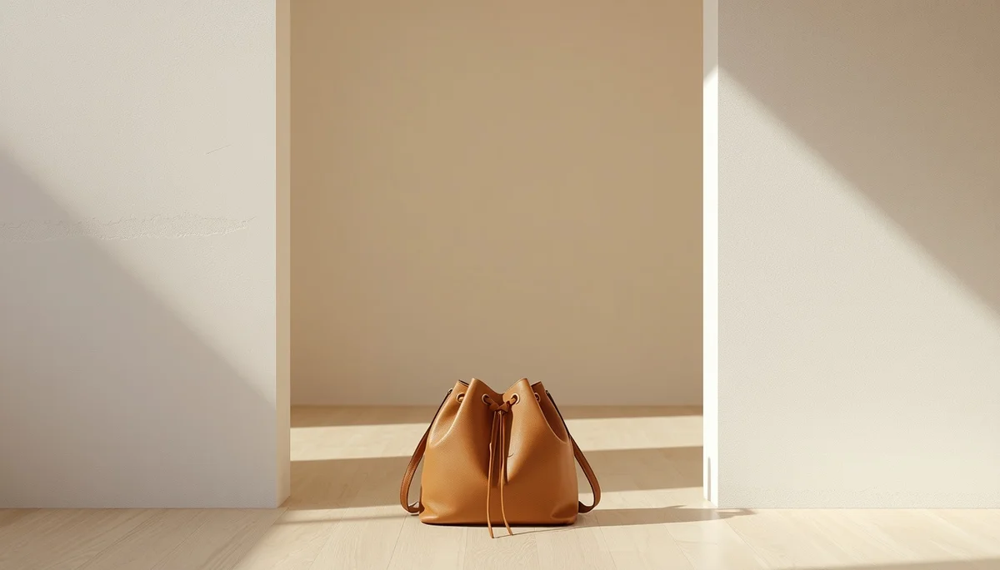

El peso de las mochilas y el material escolar
Uno de los factores externos que más impacta en la salud de la espalda infantil es el transporte diario de mochilas sobrecargadas. Cargar con un peso desproporcionado o colgar la bolsa de un solo hombro obliga a la columna a compensar la carga de forma asimétrica, generando tensiones musculares innecesarias.
Criterios de carga y colocación simétrica
Se recomienda que el peso total de la mochila no supere el diez o quince por ciento del peso corporal del menor. Asimismo, debe llevarse siempre apoyada sobre ambos hombros mediante asas acolchadas y ajustadas, situando los objetos más pesados en la zona que queda pegada a la espalda.
Organización diaria para evitar sobrecargas
Revisar conjuntamente el contenido de la mochila y retirar aquellos materiales que no se utilicen ese día es un hábito doméstico muy eficaz para proteger la salud de la columna escolar.
"Una mochila bien ajustada y ligera previene descompensaciones lumbares y cuida la postura en cada trayecto."
Proteger la espalda desde los pequeños detalles
Supervisar cómo se transporta el material escolar fomenta hábitos saludables que acompañarán al menor durante toda su etapa formativa.
➔ Volver al índice de Higiene Postural